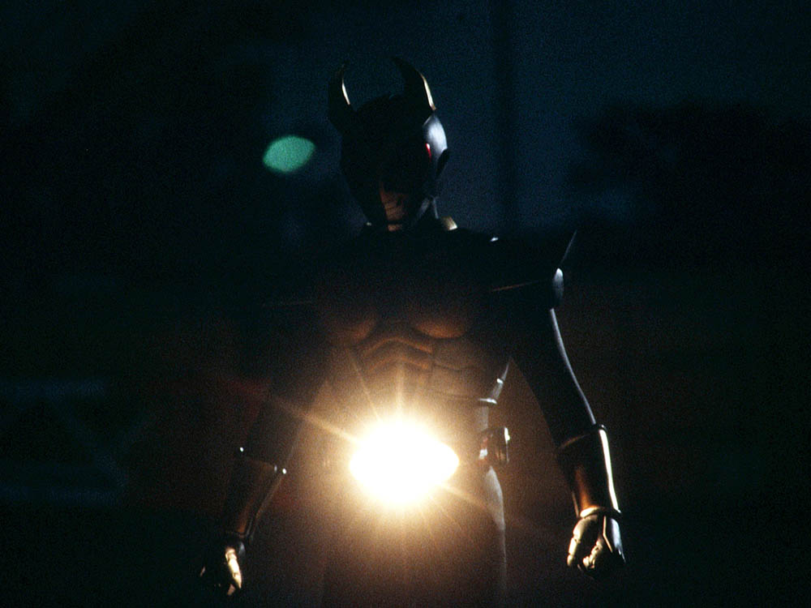
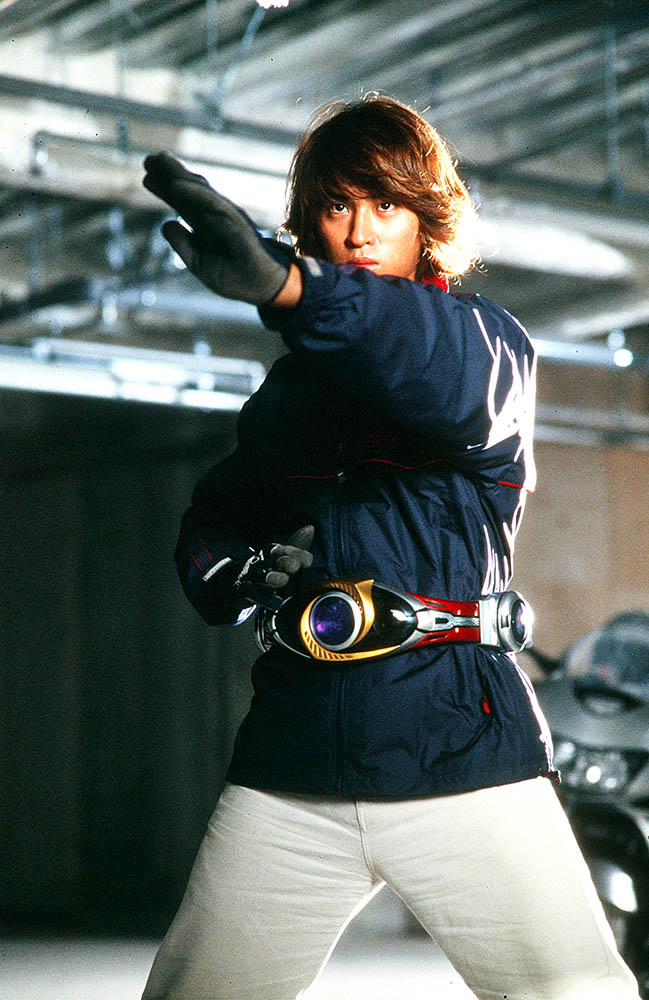
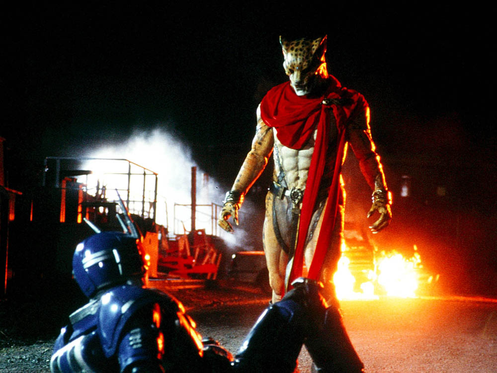
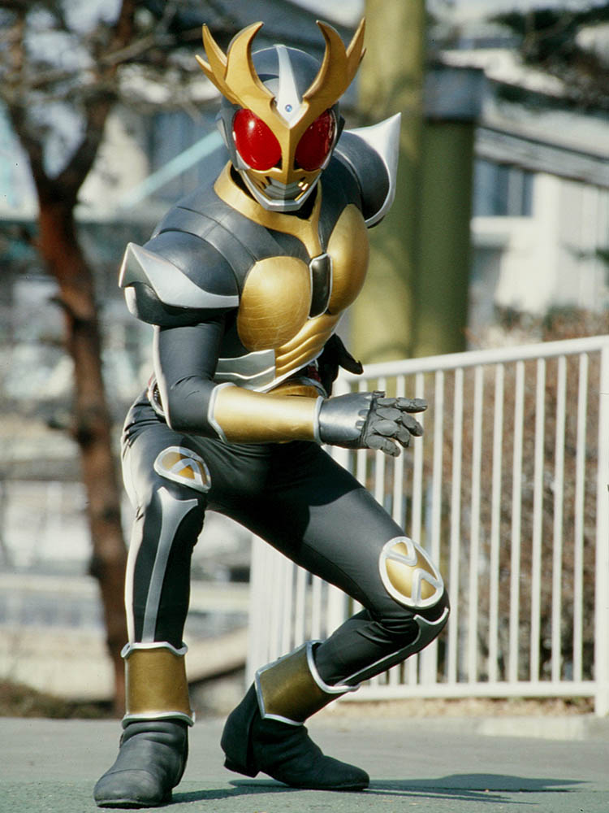
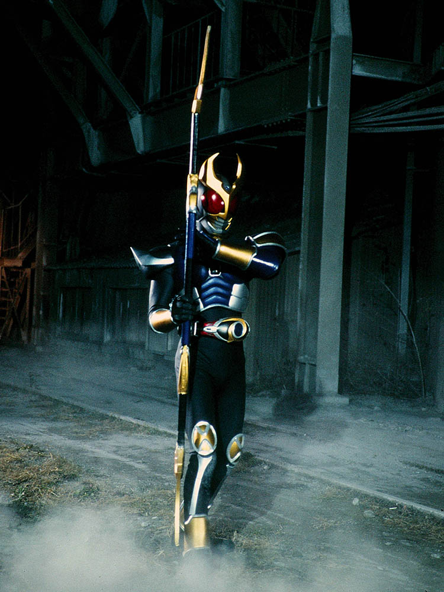
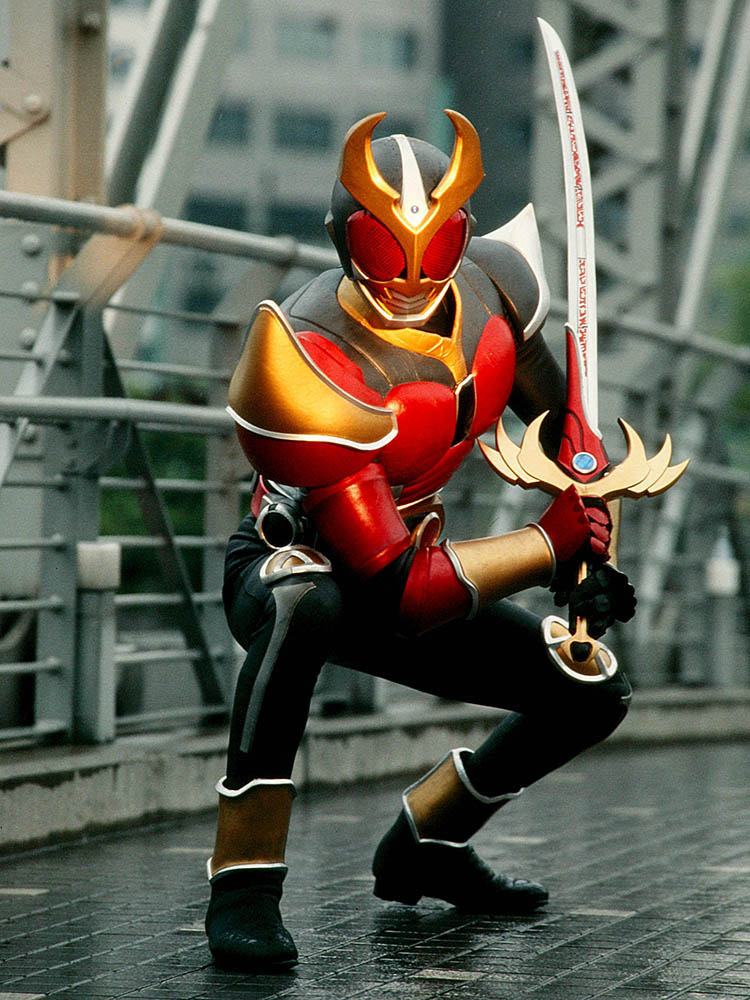
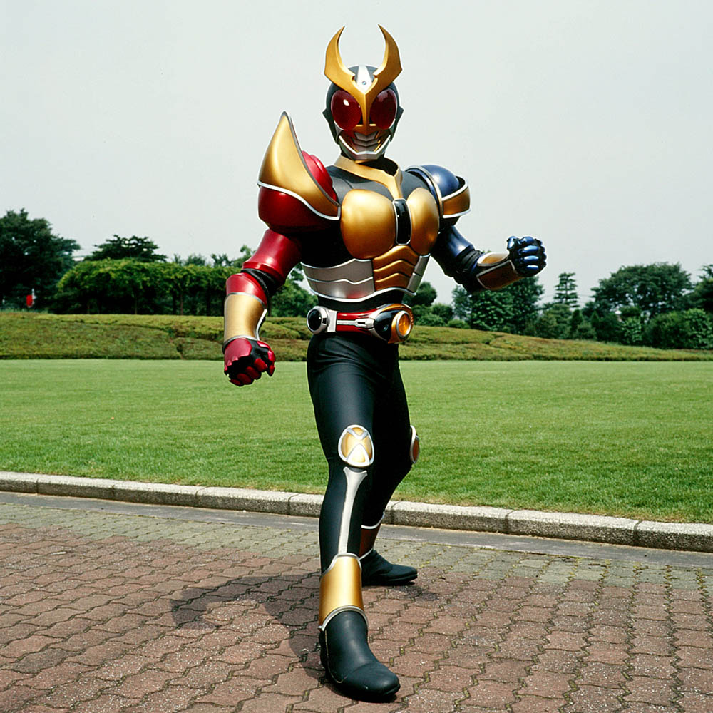
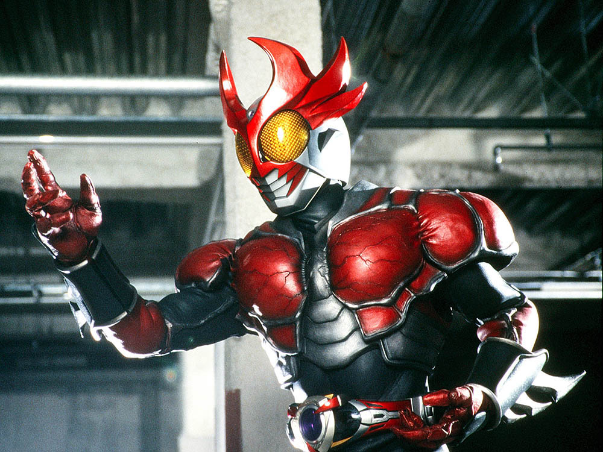
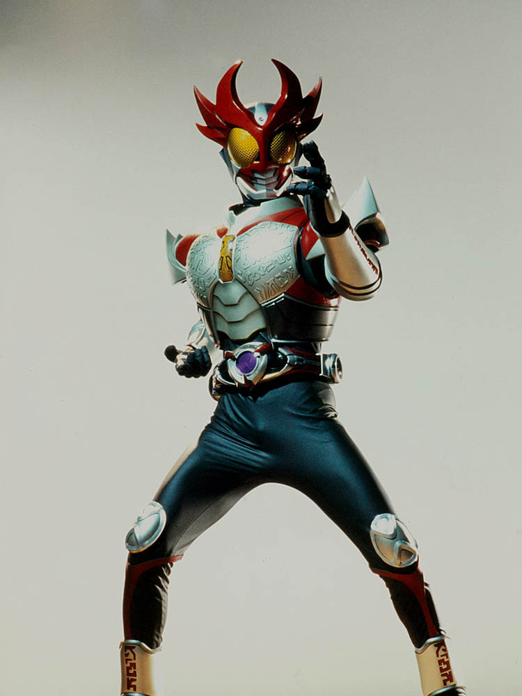

2013年から放送された「仮面ライダーアギト」に登場する仮面ライダー
変身者は津上翔一。変身ベルトオルタリングをつかい変身する。
ベルトの発光がまぶしい。
基本形態はグランドフォーム。
身長：195cm 体重：95kg パンチ力：7t キック力：15t ジャンプ力：ひと跳び30m 走力：100mを5秒程度

ポーズをとるとオルタリングが出現し、変身の掛け声とともに変身する。
当初は変身の際に苦痛を伴っていたが、次第にコントロールしていき、
様々な形態に変身することができるようになった。

アギトの力に覚醒する可能性を持った人間と
その血縁者を根絶やしにすることを目的とする怪人
基本的に生物をモチーフとした姿で、人知を超えた能力を使う。

グランドフォーム
アギトの基本形態。
大地の力を宿している。パワーとスピードに優れている。
近接での各党戦を得意としている。

ストームフォーム
左肩に風の力を宿した形態。
スピード、ジャンプ力に優れており、
薙刀「ストームハルバード」を用いて戦う。

フレイムフォーム
右肩に炎の力を宿した形態。
腕力が強化されており、「フレイムセイバー」
での斬撃を得意とする。

トリニティフォーム
フレイムフォーム、ストームフォーム、グランドフォームの力を融合させた形態。
全ての能力が強化されており、
「ストームハルバード」「フレイムセイバー」の両方を駆使して戦う。
３形態相当の力を発揮するものの、変身者への負荷が激しい形態。

バーニングフォーム
アギトの中間形態。
溶岩のような赤い装甲に覆われており、
防御力は全フォームでトップクラスに高い。
近接格闘に特化しており、各党攻撃だけではなく、
「シャイニングカリバー」での斬撃も得意としている。

シャイニングフォーム
アギトの最強形態。
優れた俊敏性を生かした戦い方を得意としつつ、「シャイニングカリバー」
での2刀流の斬撃を得意としている。
全形態中、パンチ力を除けば最高の数値を誇っている。
また、アギトは成長段階にあり、これの上の形態を獲得する可能性がある。
仮面ライダー一覧